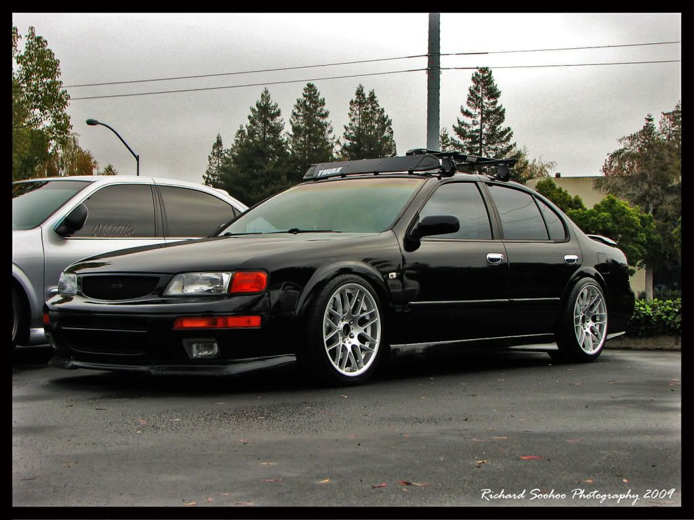

-
Hey DZ, I am building a car (not a Z) and really like these wheels. Not shooting for VIP but like the touch of that look about them. I cannot afford them so I was thinking you might know something similar? If not I will have to save for these. Been looking for almost a year and cannot find anything else I like. Thx http://zilvia.net/f/showthread.php?t=570786 -
I am not really familiar with any other wheels using that style. I'm not a huge fan of that look so I don't really keep my eyes open.
Maybe Work VS-SS, they have less curved spokes tho.

1988 300zxt. gt35, stance, etc. Wheels: Varrstoen ES2 18x9.5 et-13 225/40. 18x10.5 et0 245/40
1990 jetta vr6'd -
Well they would go on a 97 Maxima I am buying. I doubt the car could pull off real VIP wheels so i want to avoid them. (Maximas cannot pull off VIP even a little IMO). This build will be a cross between drift missle, modern rat rod, tuner, with some functionality. (One of my favorite rat rods has these big nice wheels - love it; so i stole the idea.) I doubt anyone will understand my taste much less like the result which is fine. Anything that would look good on a slammed 4th gen will look good on my build. I was shooting for 19s as 20s might be too big (not sure) and 18s are too small [for sure]. That help at all?
I like Work VS-SS a lot but a maxima is prob too fat for the skinny spokes? Maybe something like the XX tho? The prices for anything BBS used in 19" started over 2k. LoL I would rather save and wait then buy mediocrity. (I have G35 19s I will use to test fit.) -
I quite like this..

It seems that the standard larger 'tuner' wheels look pretty good on these chassis'
This thread might also helps, seems like it's a decent one to look thru for a wide variety of styles and wheels.
http://maxima.org/forums/members-rid…imas-site.html
1988 300zxt. gt35, stance, etc. Wheels: Varrstoen ES2 18x9.5 et-13 225/40. 18x10.5 et0 245/40
1990 jetta vr6'd

Copyright © 2006–. All rights reserved. Privacy Policy